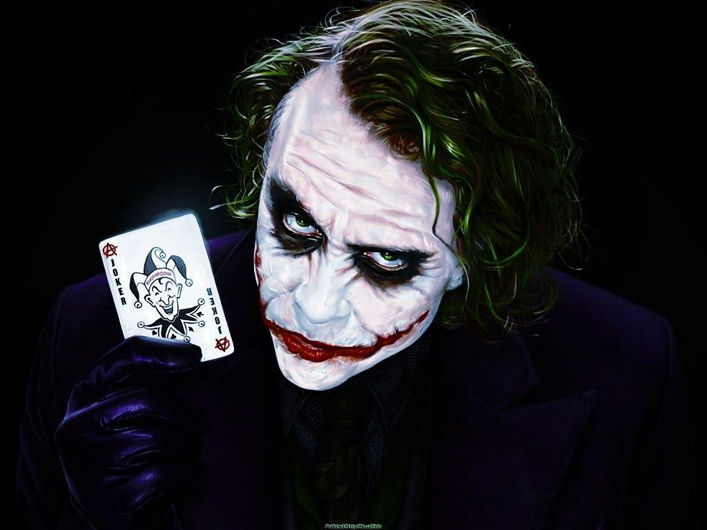
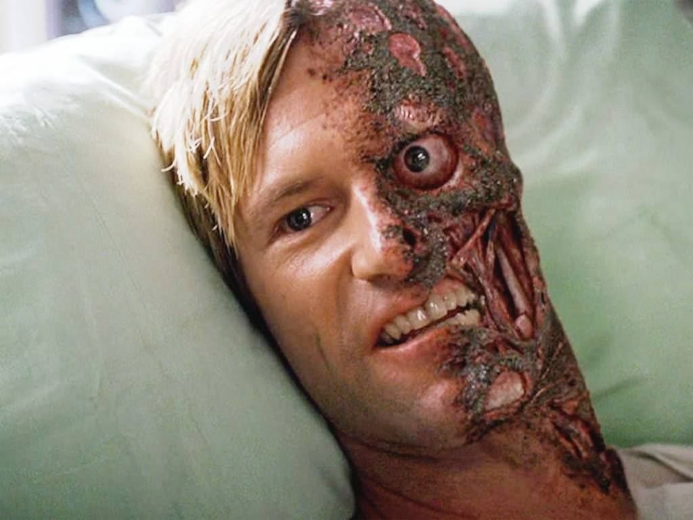

The Joker possesses no superhuman abilities, instead using his expertise in chemical engineering to develop poisonous or lethal concoctions, and thematic weaponry, including razor-tipped playing cards, deadly joy buzzers, and acid-spraying lapel flowers.
Two-Face (Harvey Dent) is a fictional supervillain appearing in American comic books published by DC Comics, commonly as an adversary of the superhero Batman. The character was created by Bill Finger and Bob Kane and first appeared in Detective Comics #66 (Aug. 1942).[3] As one of Batman's most enduring enemies, Two-Face belongs to the collective of adversaries that make up Batman's rogues gallery.
